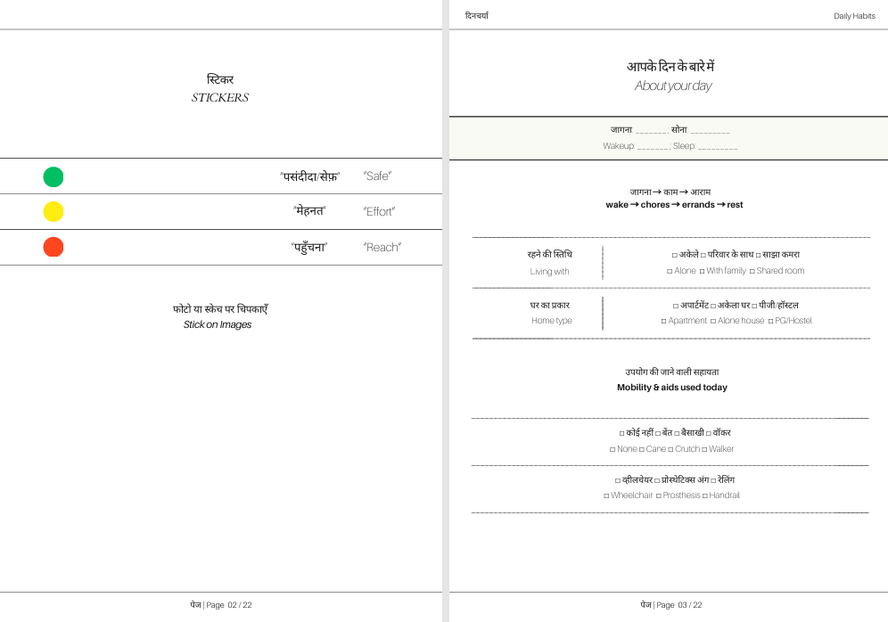

Phase 0
Foundation
We reviewed prior work and existing mobility aids to map what “low-floor” living demands.
We gathered early signals from field visits to identify where clinical assumptions break inside domestic routines.

In many Indian homes, most daily work still happens on or near the floor: cooking, bathing, praying, caring for others. Mobility aids, however, are built for hospital corridors and majorly for public infrastructure and mostly for standing bodies. This project listens to how individual with mobility impairment actually move through these low-floor routines, where pain and risk show up, and how they imagine safer ways of living in the same homes.
Research questions that arrived after
reviewing related literature in the field of
#assistive_device
#lower_limb_mobility
#speculative_design
Across literature, recurring gaps appeared between clinically defined
mobility solutions and the realities of low-floor domestic life.
To address this, the inquiry was structures into successive phases.
We conducted three sequential phases (Phase 0–2) to examine low-floor mobility in domestic contexts, combining semi-structured interviews with two bespoke booklet-based workshops. We asked participants to document everyday movement between floor, cot, kitchen, toilet, and bathing spaces, and we gathered filled booklets, sketches, photographs, video recordings, and written reflections. All activities were conducted with IEC approval and informed consent.
We reviewed prior work and existing mobility aids to map what “low-floor” living demands.
We gathered early signals from field visits to identify where clinical assumptions break inside domestic routines.
We conducted contextual walkthroughs and semi-structured interviews across rooms (cot–floor–kitchen–toilet–bath).
We recorded video (with consent) to capture transfers, thresholds, and posture sequences that are hard to report verbally.

We asked participants to annotate and reshape prompts (booklet + artefacts) to surface “needs vs wants” in assistive support.
We coded transcripts and artefacts into emergent themes, then translated them into design directions for Phases 3–4.
We reveal four main areas of opportunity, which represent the participants’ perspectives on their most important needs that could be met with GenAI and their ideas for how GenAI can meet those needs by supporting daily tasks: (1) health assistance and monitoring, (2) memory assistance and reminders, (3) communication assistance, and (4) technology learning and troubleshooting.
We identified key concerns and considerations when designing GenAI for daily task support, including privacy, security, accessibility, emotional intelligence, and supplementing humans rather than replacing them.
We also present design recommendations and a conceptual framework for developing future GenAI-powered systems that address older adults’ needs while respecting their concerns. This research contributes to research on age-inclusive AI design, providing insights for developers and policymakers working on GenAI solutions for healthy aging.


.png)
Pages from the Bespoke Booklet. These spreads show early co-speculative and participatory prompts.
Read the full booklet →.jpeg)
.jpeg)
.jpeg)
Workshop documentation excerpts from Phase two activities.
The workshop responses were then reviewed with professionals, doctors, physiotherapists, practitioners, and nodal officers, to discuss the feasibility, risks, and practical challenges of the proposed ideas in real domestic contexts.
.png)
.png)
.png)
This project is actively developing a participatory framework to address many of the areas of opportunity
revealed through interviews, clinical reflections, and co-speculative workshops on low-floor domestic mobility.